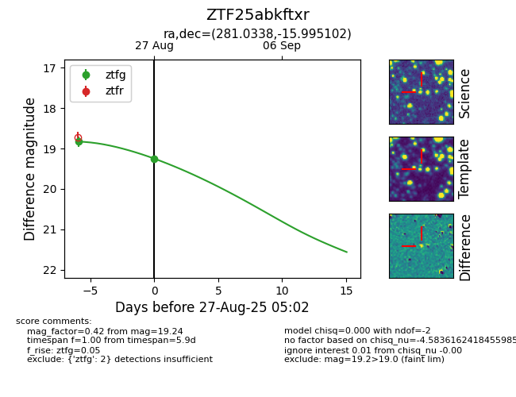

Target ZTF25abkftxr at 2025-08-27 05:02, see:
FINK: fink-portal.org/ZTF25abkftxr
Lasair: lasair-ztf.lsst.ac.uk/objects/ZTF25abkftxr
ALeRCE: alerce.online/object/ZTF25abkftxr
alt names
ZTF25abkftxr (ztf,fink)
coordinates:
equatorial (ra, dec) = (281.0338,-15.99510)
galactic (l, b) = (17.8340,-5.64661)
photometry
last ztfg=19.24
2 ztfg detections
